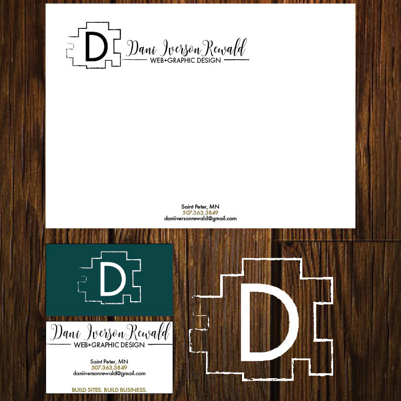

As I further my education and continue to learn more about coding and web design on a daily basis I find that I am still perfecting my skills.
I have gained experience in other fields throughout my education such as photography, print design, logo design, and motion graphics. My passion for web and pritn design has given me the cance to concentrate and imporove my skills in the subject I truly enjoy. I'm a creative thinker and always attempting to problem solve. I also thrive on pressure and my dedicatino to create successful designs tailored to each helps me meet deadlines with satisfaction.

CODING
Developer with a focus on writing clean, elegant, and efficient code. I mostly use HTML5, CSS3, WordPress, PHP, JavaScript and a little bit of jQuery.

WEB DESIGN
Designing and developing websites that are inspirin, functional, easy to navigate and rank on all major search engines; I bring your ideas to life and provide your company with a platform that will allow you to make the most of your online presence.

PRINT DESIGN
My wide arsenal starts with brochures, postcards, letterheads, business cards, posters, labels, fabric patterns, screen print, exhibit and both graphics, give-away object design and so much more.